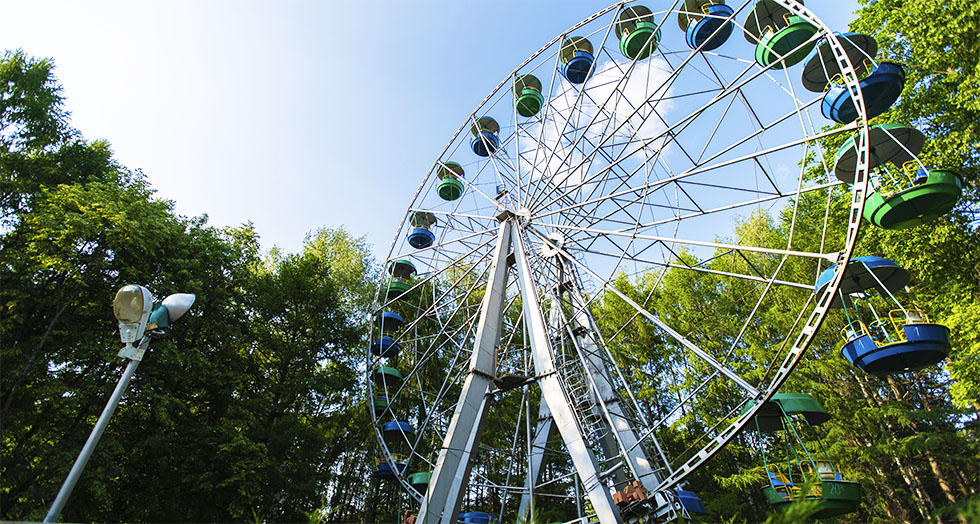
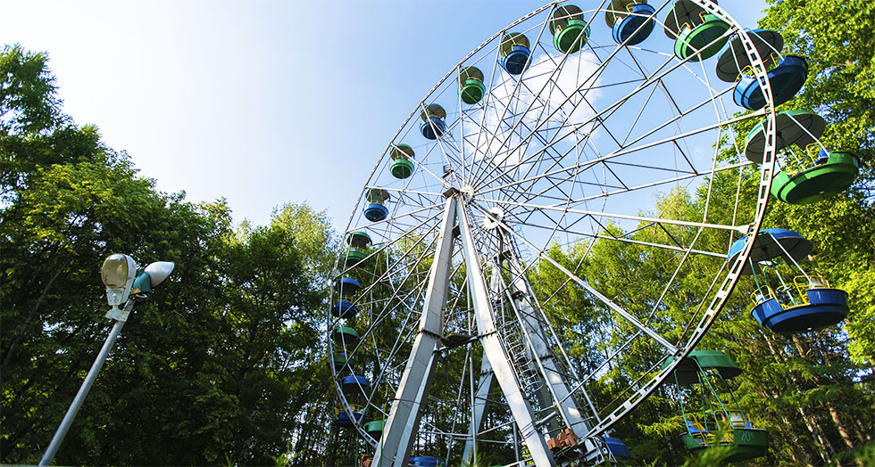

Интерактивная карта
На этой карте вы можете увидеть расположение основных аттракционов и объектов парковки, а также интересные точки для отдыха и развлечений.
Информация о парке
Парк Нефтяников — это одно из самых популярных мест отдыха в городе.
Он предлагает разнообразные возможности для активного и спокойного времяпрепровождения.
Прогулочные дорожки и зелёные насаждения создают атмосферу уединения и гармонии с природой.
В парке расположены детские площадки, на которых маленькие посетители могут весело проводить время.
Здесь также проходят различные мероприятия, включая концерты и фестивали, привлекающие семьи и туристов.
 

Услуги и мероприятия
В Парке Нефтяников можно найти зоны для пикников, где дружные компании могут удобно разместиться.
Спортивные площадки позволяют заниматься активными видами спорта на свежем воздухе.
Парк организует мастер-классы и культурные события, которые интересуют как детей, так и взрослых.
В удобных кафе на территории можно насладиться вкусными блюдами и прохладительными напитками.
Парк Нефтяников — это идеальное место для семейного отдыха, где каждый найдет что-то для себя.
Аттракционы и развлечения
В парке представлены различные аттракционы, которые обеспечивают развлечения для всех возрастов. Ниже перечислены некоторые из них:


Контакты
Парк Нефтяников рад ответить на все ваши вопросы!
Адрес: Парк Нефтяник, Ярославль
Телефон: (123) 456-7890
Электронная почта: info@parknefty.ru
Социальные сети: